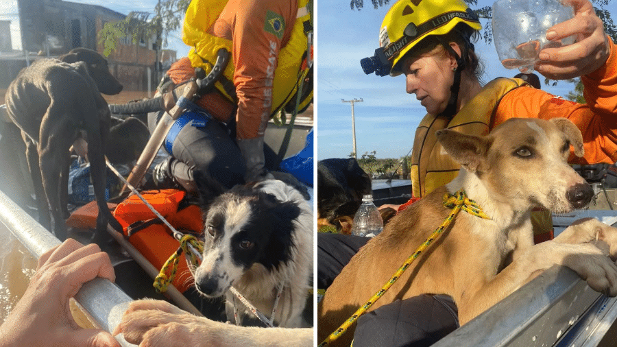

Nossos Projetos
A ONG Amigão atua no resgate, acolhimento e adoção de animais. Nossos projetos são mantidos por doações e pelo trabalho de voluntários dedicados, que ajudam a transformar a vida de centenas de animais todos os anos.
Projeto Acolher
O Projeto Acolher oferece abrigo temporário para cães e gatos resgatados até que encontrem um lar definitivo. Contamos com parcerias de clínicas veterinárias e famílias acolhedoras que garantem o bem-estar dos animais durante esse período.
Como Ser Voluntário
Você pode participar como voluntário ajudando nos cuidados diários, em eventos de adoção e nas campanhas de arrecadação. Para se inscrever, acesse a página de cadastro.
Como Doar
As doações são essenciais para manter nossos projetos ativos. Você pode contribuir com qualquer valor ou com doações de ração, medicamentos e materiais de limpeza.
- Pix: doacoes@ongamigao.org.br
- Conta Bancária: Banco do Brasil - Ag. 0001 - Cc. 12345-6